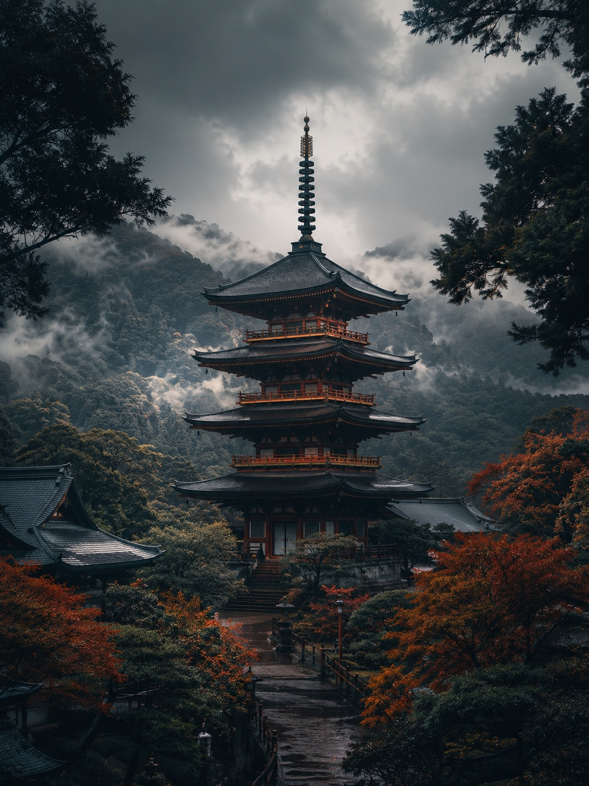
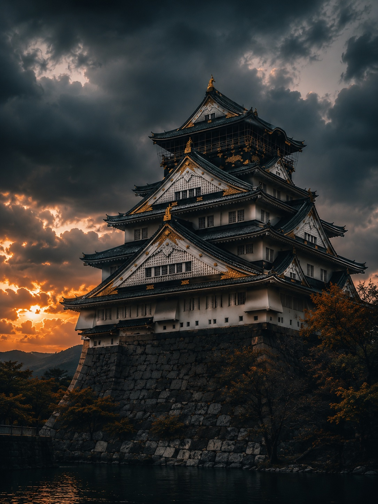
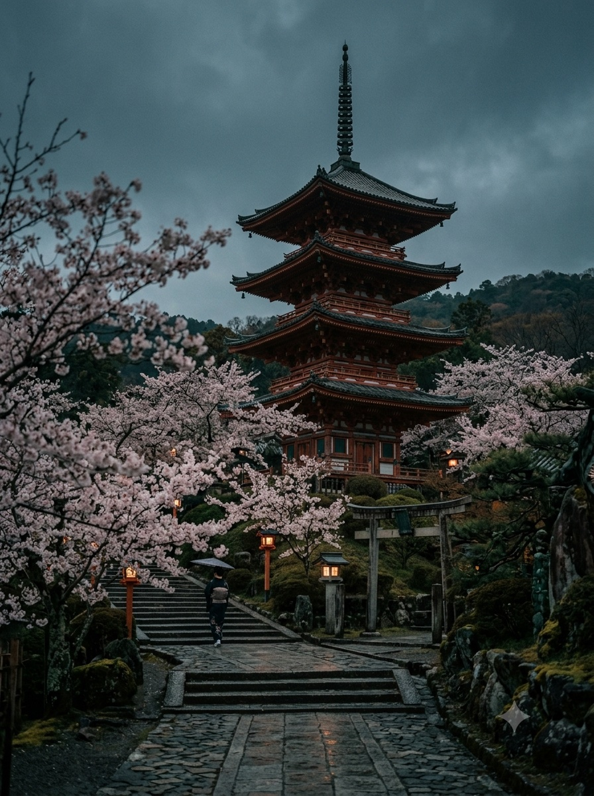
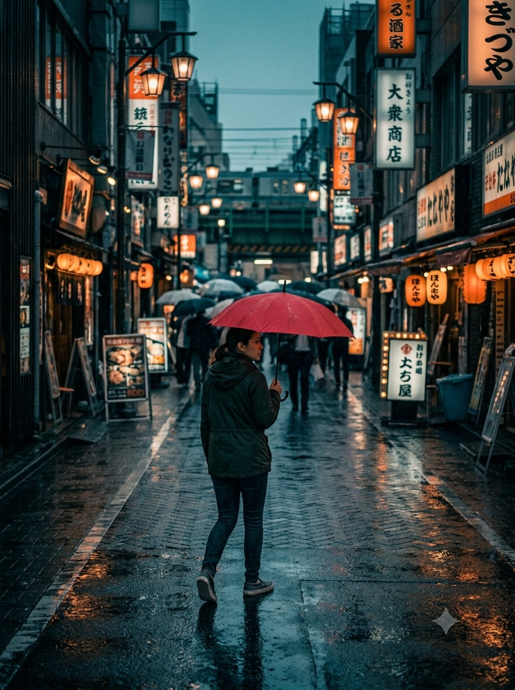
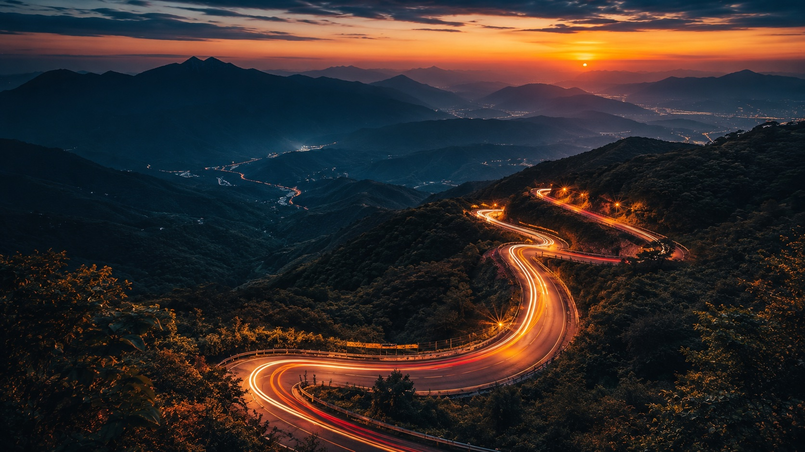

Cultura & Tradição
Templos centenários, jardins zen e cerimônias do chá preservadas há gerações.
Saiba mais →Descubra a capital do Japão: tradição milenar e futuro vibrante na mesma cidade.
Templos centenários, jardins zen e cerimônias do chá preservadas há gerações.
Saiba mais →Do sushi de Tsukiji ao ramen de Shinjuku: a cidade com mais estrelas Michelin do mundo.
Saiba mais →Neon de Shibuya, tecnologia de Akihabara e a energia única das ruas de Tokyo.
Saiba mais →Escolha seu destino

Fushimi Inari: mil portões torii em Kyoto

Monte Fuji: pagode Chureito e vistas clássicas

Tokyo à noite: neon, torres e vida urbana

Kyoto histórica: ruas, templos e tradição
Nossa filosofia

Estradas panorâmicas
Aventura nas montanhas